角色规范、场景Prompt、原始素材与3D交互集中在这里。先选画面方向，再使用官方角色原档生成。
同一原始角色，分别尝试币种前景、斜向飞行和两卡伴飞。先选画面方向，再复制对应Prompt。
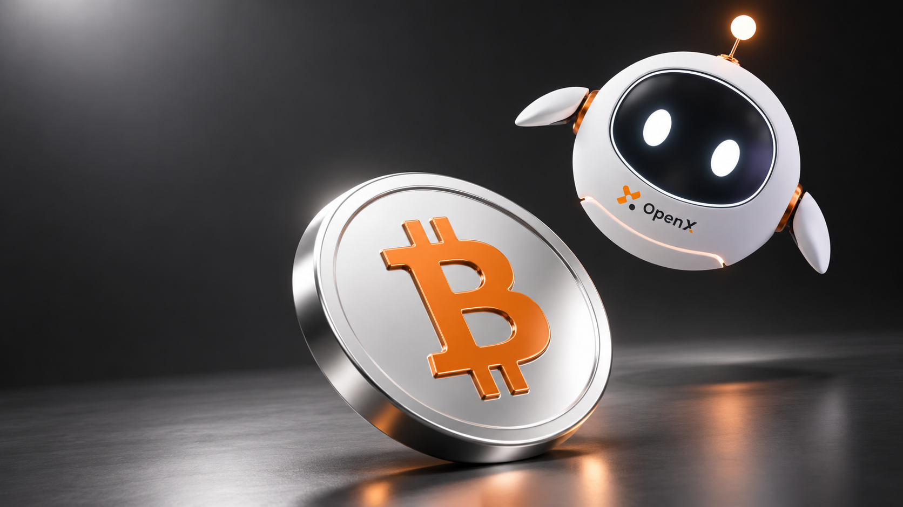
主体动作：一枚光滑银色比特币在前景倾斜，橙色币种符号；球形白色机器人在后方右上悬浮，机身倾斜约15°，翼状手臂自然展开，不接触或承重币体。 构图：16:9，币体在横向43%–72%、纵向42%–92%；机器人在右上69%–95%、12%–63%，前大后小，形成斜向张力，主体完整。 颜色材质：黑白灰与重点橙#FF8200；光滑银色、白壳、黑玻璃，不使用拉丝和脏纹理。 背景光照：左上柔光，深灰背景，光滑无纹理地面，柔和阴影和克制反射。 留白：左侧约38%供后期标题和Logo，不制造空洞底部。 限制：附最初官方角色原档，保留结构及胸前原有标志；不增加肢体，不生成文案、独立Logo或slogan。每次从原档重生，不递归参考生成结果。下载底图
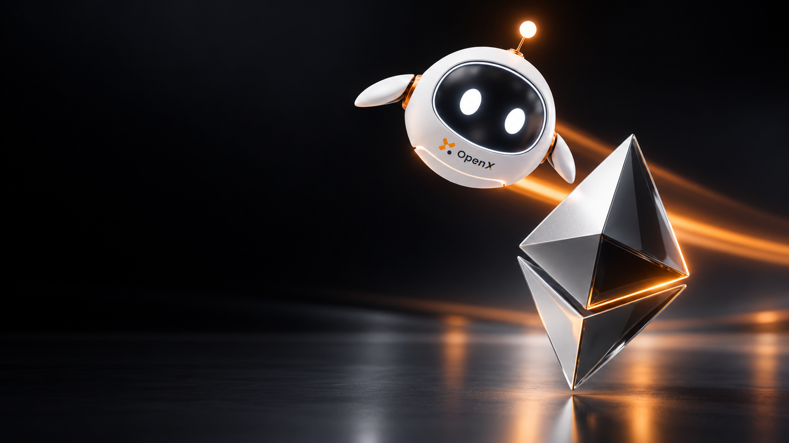
主体动作：一个银色与深灰玻璃的双锥菱形数字资产主体；球形白色机器人在其后上方斜向飞行，机身倾斜约15°，翼臂通过原有关节有限展开，与主体保持间隙。 构图：16:9，菱形主体在右下55%–76%、47%–90%；机器人在右上72%–94%、13%–59%，前后景尺度有差异，轮廓完整。 颜色材质：黑白灰与少量橙#FF8200；光滑银色、白壳、黑玻璃，无拉丝、划痕和颗粒。 背景光照：近黑背景、左上宽柔光；一道克制橙色拖影沿飞行方向后延，远景轻微模糊，机器人与胸标清晰，地面光滑无纹理。 留白：左侧约40%用于后期文字。 限制：角色外观只参考最初官方原档，保留眼睛、天线、翼臂与胸前标志；不增加卡片、粒子和文案，每次从原档重生。下载底图
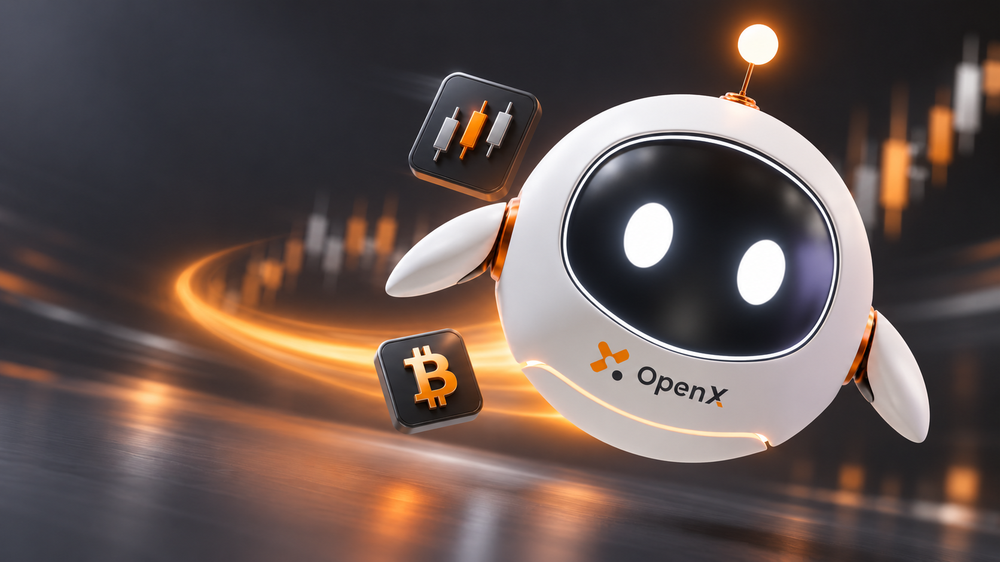
主体动作：球形白色机器人朝镜头斜向飞行，机身倾斜约12°，原有翼臂自然错位展开；只搭配两张小号石墨灰icon卡片，一张三根橙白K线，一张橙白比特币符号，不遮面、不围成一圈。 构图：16:9，机器人在右侧65%–93%、20%–78%；两卡在中右上52%–65%、19%–41%和中右下50%–63%、53%–74%，近大远小。 颜色材质：黑白灰与重点橙#FF8200；光滑白壳、黑玻璃、光滑卡片倒角，无拉丝和颗粒。 背景光照：深灰柔光；一道弧形拖影从身后延伸，背景轻微速度模糊，角色和胸前标志清晰，地面光滑无纹理。 留白：左侧约38%给后期文字。 限制：只附最初官方角色原档，保留结构和标志，不生成标题、slogan或独立Logo，不加第三张卡片，禁止递归参考生成结果。下载底图
产品海报使用光滑镀银、哑光烤漆与黑玻璃；不使用拉丝金属、滚花或颗粒质感。地面光滑无纹理，只保留柔和阴影与克制反射。人物室内与纸张材质按实际参考保留。
沿用参考图的球形白壳、黑玻璃面罩、两只白色椭圆眼、细天线、橙色关节和胸前原有标志。翼状手臂连接在两侧短小自然的肩部关节上，保持原档长度，不拉长、不悬空、不穿模，不增加手指或额外肢体；头身比例和天线角度自然。
每张选择观察、示意或斜向飞行。用前后景尺度差、斜向排列、10–15°机身倾斜及悬浮高度体现动势；翼臂按动作有限展开，关节自然，与道具留间隙，不夹持或承重。静态只真实光照；飞行允许一道顺运动方向的短橙色拖影与轻微背景速度模糊，角色和胸标清晰，不加粒子或多道光带。
机器人 + 一件实体道具，或机器人 + 1–2张相关图标卡片。资金费率可用计算/百分比与时钟图标。卡片为小号石墨灰圆角立体块，低于机器人视觉权重；最多两张，不围成一圈，不与多件实体道具堆叠。
主体动作：球形白色机器人斜向飞行，机身倾斜10–15°，视线朝两张百分比、时钟icon卡片；翼臂有限错位展开，关节自然，与卡片留间隙，不抓取承重。 构图：16:9，主视觉在右侧50%–94%、纵向15%–83%；机器人为主，两张小号石墨灰圆角卡片前后错位，近大远小，不遮面、不围成一圈。 颜色材质：黑白灰与橙#FF8200；光滑镀银、白色哑光烤漆、黑玻璃，无拉丝。 背景光照：深灰宽柔光，地面光滑无纹理；一道短橙色拖影顺飞行方向后延，背景轻微速度模糊，角色与胸标清晰。 留白：左侧6%–46%、上方品牌位、左下页脚保持安静，不造大片空底。 限制：保留原档结构和胸标，不加肢体、第三张卡片、粒子或出版文字。每次只从原始照片或官方角色原档重生；成品仅分析动作、构图与材质，不作像素输入，禁止递归参考生成结果。
角色原档用于校对与生图参考。走样时重新生成，先检查胸前标志、关节连接、动作与视线，再检查构图；标题、Logo与slogan在后期独立排版。
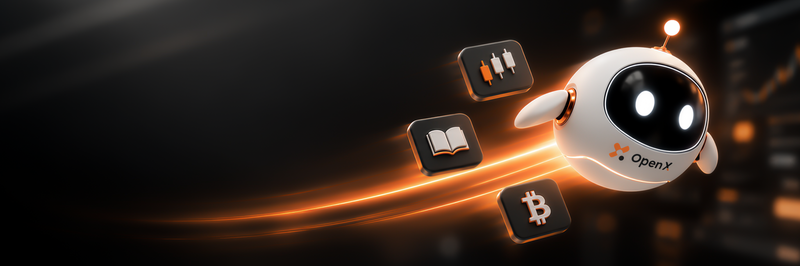
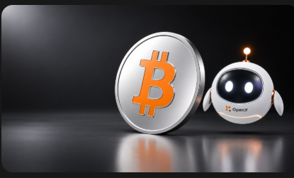
这些成品用于分析动作、构图和材质，不作为第二轮生图的像素输入。角色外观始终回到官方原档。
已有IP原档用于确认角色结构、材质和标记，并作为新场景的角色参考图。机器人搭配一件实体道具，或最多两张相关图标卡片；手臂与视线按上方动作规范。
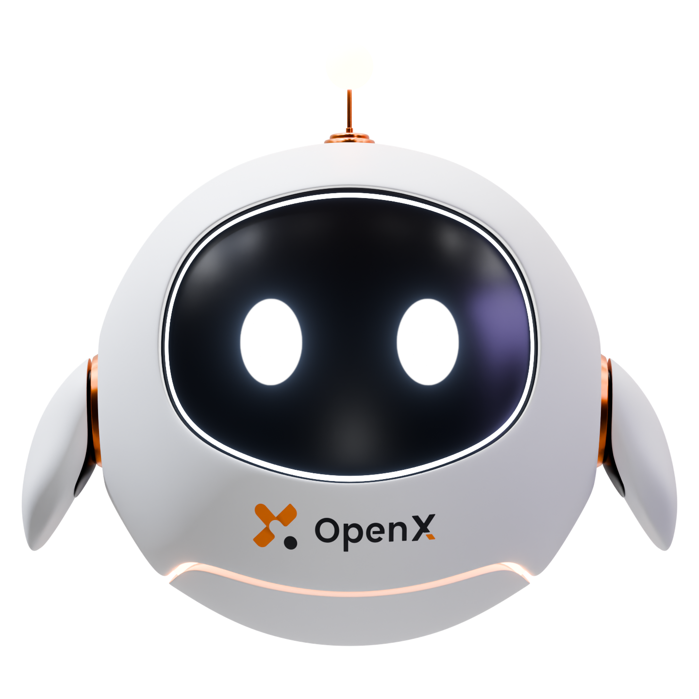
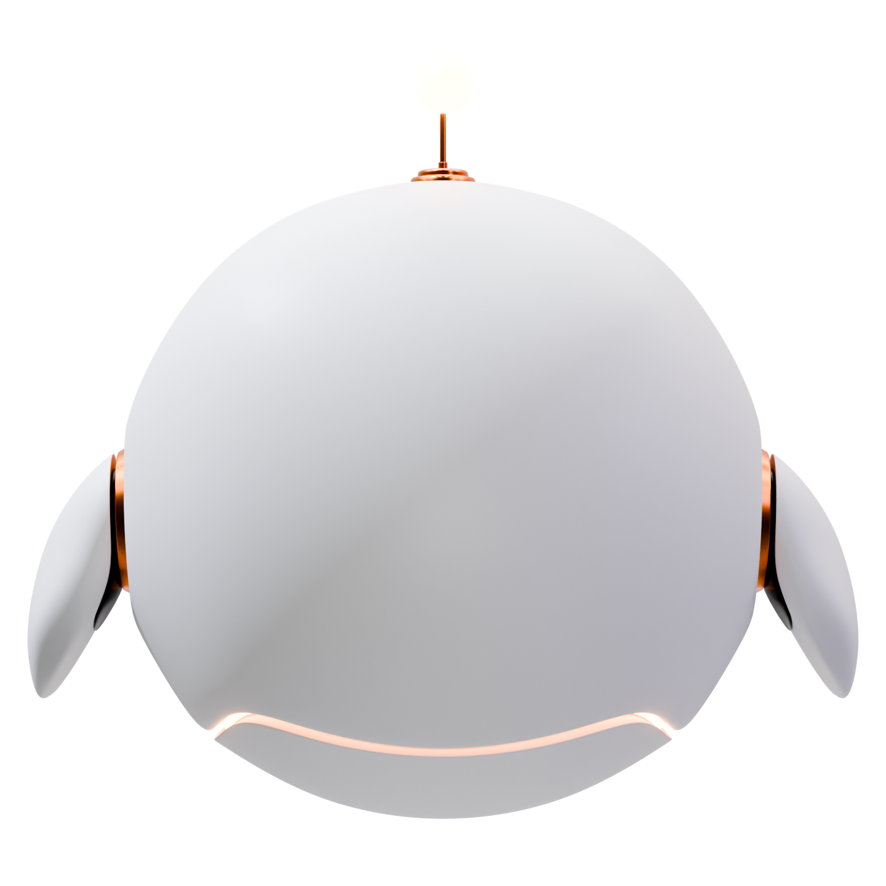
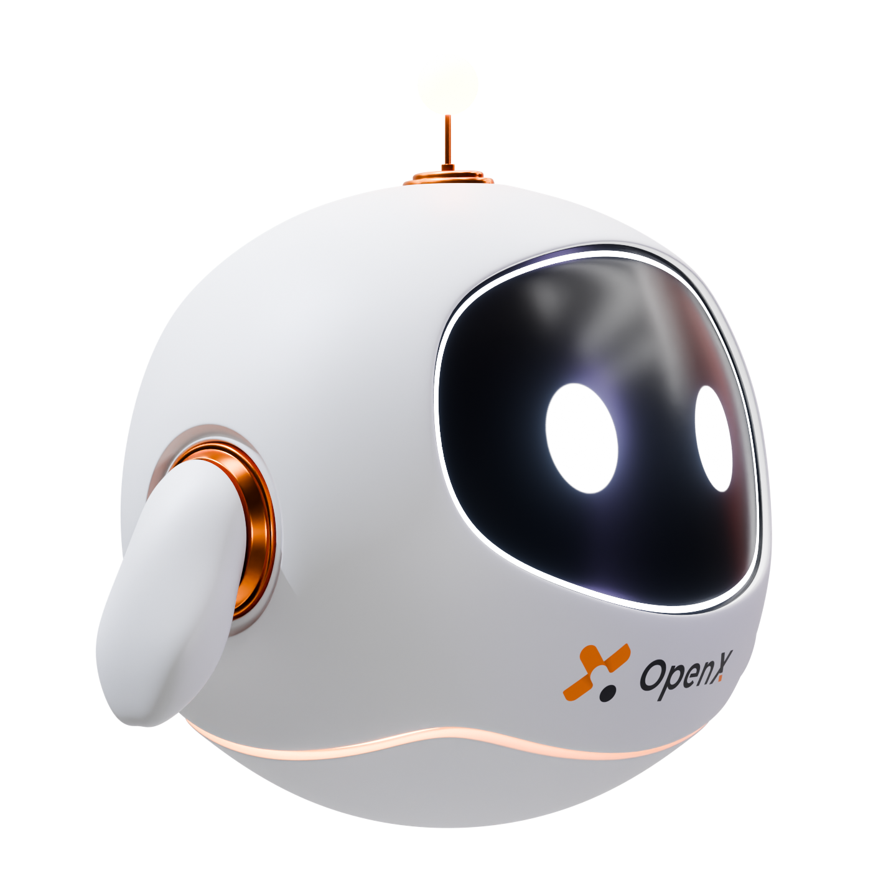
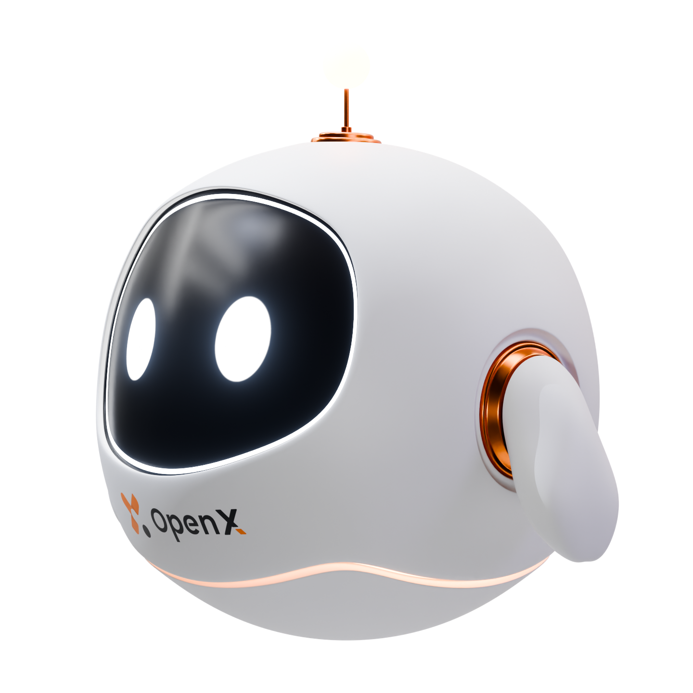
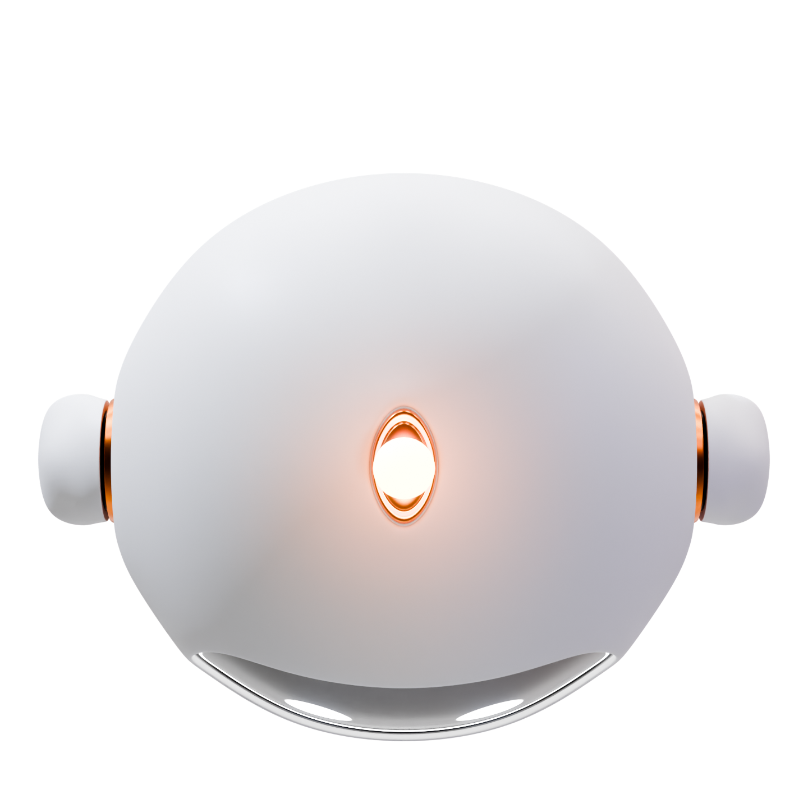
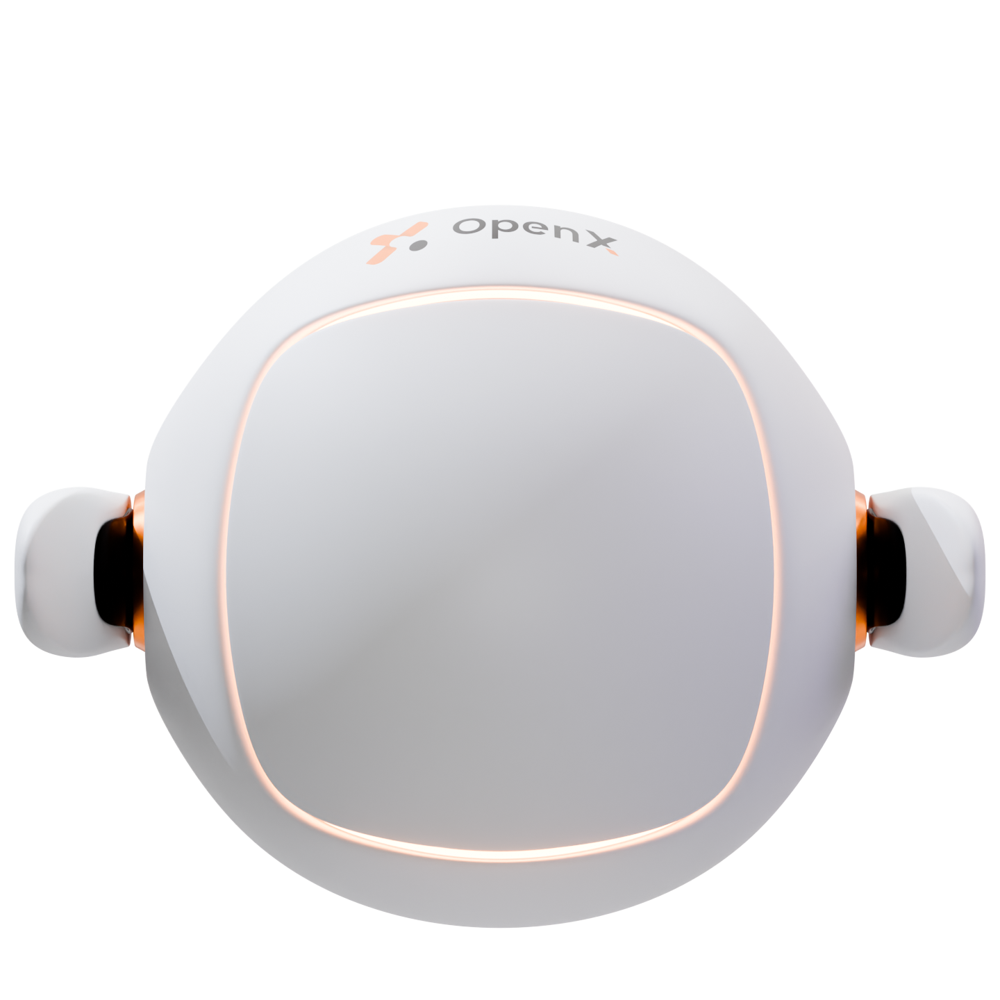
来源：D:\OpenX\IP-BOT中的透明多视角原档与已有flight交互面板；使用本地自托管Three.js，无需外部CDN。角色自身屏幕显示属于原IP设计，不能据此给社媒背景添加虚假光效。